NousResearch/hermes-agent
The agent that grows with you
Open proof sourceTrendFoundry scans public signals and turns them into ranked ideas, proof links, CSV, and scripts. Choose one sample, a weekly pipeline, or a custom niche desk.
How it works
TrendFoundry turns public changes across GitHub, YouTube, Bilibili, HN, and arXiv into creator-ready topic packs: proof, angle, risk, and script handoff.
Tiers
The same public signal becomes one sample issue, a weekly queue, or a custom niche desk depending on the cadence you need.
Selected tier
Sample issueTest once
GitHub Hermes AgentOne ranked issue with proof links, CSV, risk notes, and a first recording script.
Free sample
The public sample reveals format, scoring, source links, and quality notes without exposing the full paid pack.
This episode turns NousResearch/hermes-agent into a practical workflow test instead of a trend recap.
This episode turns infiniflow/ragflow into a practical workflow test instead of a trend recap.
This episode turns google-gemini/gemini-cli into a practical workflow test instead of a trend recap.
Product preview
The board image is generated from the current ranked issue so buyers can see source lanes, scores, and idea density before opening the sample files.

Workflow in motion
This animated preview is regenerated from the same current issue as the signal board, so the product feels inspectable before a buyer downloads or orders.

Evidence runway
The Apple-like moment here is restraint: fewer moving parts, but every step keeps the buyer confident that the opportunity can be traced, judged, shaped, and shipped.
01 / Proof
02 / Score
03 / Shape
04 / Ship
Sample signals
TrendFoundry turns public AI and developer trends into recordable topics, proof links, CSV, and script handoff. Products only differ by commitment: one issue, weekly queue, or custom niche desk.
The agent that grows with you
RAGFlow is a leading open-source Retrieval-Augmented Generation (RAG) engine that fuses cutting-edge RAG with Agent capabilities to create a superior context layer for LLMs
An open-source AI agent that brings the power of Gemini directly into your terminal.
Sample preview
The agent that grows with you
Before / after
The business promise is not more information. It is less decision fatigue before a creator turns on the camera.
Planning estimator
TrendFoundry is most valuable when your bottleneck is deciding what deserves a recording slot, not pressing record.
estimated planning time reclaimed each month
Suggested: Weekly pipelineOffer
Start with one pack, keep a weekly queue, or ask for a narrow desk. Every tier uses the same proof-first format; only depth and cadence change.
one-time
$9
Test onceA proof-backed pack for testing one channel before you subscribe.
monthly
$19
Keep queue aliveThe default subscription for a steady recording queue every week.
monthly
$49
Own a nicheA focused desk for one audience, niche, or technical vertical.
Order summary
The default subscription for a steady recording queue every week.
Keep queue alive
What arrives
A creator does not need another digest. They need a small set of files that can move from source check to recording queue without rebuilding the research.
Ranked card
#1 NousResearch/hermes-agent
Source: GitHub
Score: 187
Why now: source-backed signal with a concrete recording angle.
Risk: normal
Sortable table
rank,source,score,title,risk
1,GitHub,187,"NousResearch/hermes-agent","normal"
Recording pass
Hook: turn the source signal into a viewer question.
Demo path: show the project, workflow, or claim in sequence.
Limitation: name what is unverified before recommending it.
Close: ask whether this deserves a deeper episode.
Source trail
Archive: latest issue page
Proof: original public URL remains attached
Pack: Markdown + CSV + script + delivery notes
Next step: buyer can order without rebuilding the research queue.
Ready when you are
Confirm the sample, sources, and delivery format before choosing a buying route. The product should feel legible before it asks for commitment.